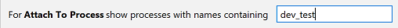

In case there are several debuggers that can be used for the selected process, you can choose among them in the pop-up menu.
You can enable showing only specific processes in the Attach to Process list.
Add the required pattern to the corresponding field in the Python Debugger settings
(Settings/Preferences | Build, Execution, Deployment | Python Debugger).
